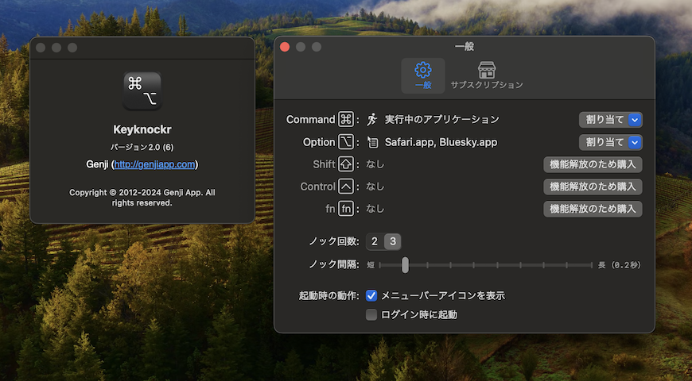

KeyknockrはmacOS用のランチャアプリケーションです。
修飾キー（Command / Option / Shift / Control / Fn）を素早く連打（ノック）することで、登録したアプリケーションを起動もしくはアクティブ化します。また、登録したURLをディフォルトのウェブブラウザで開いたり、直前にアクティブだったアプリケーションへ切り替えたりといった動作を行うこともできます。
In-App Purchaseの自動更新サブスクリプションを購読することで、Shift/Control/Fnキーへの割り当てや、「サイクルアクティベーション」「ポップアップメニュー」アクションへの割り当て上限が解放されます。

システム要件
macOS 14.2+
使用方法
- Keyknockrを起動
- メニューバーにKeyknockrのアイコンが現れるので、それをクリック
- メニューから「設定...」をクリック
- 「一般」タブにおいて、アクションを割り当てたい修飾キーの「割り当て」をクリック
- 修飾キーに割り当てるアクションを選択。割り当てられるアクションは、
- アプリケーション/ローカルファイル
- アプリケーションの実行/アクティブ化、ローカルファイルの場合は、それをデフォルトのアプリで開く
- URL
- デフォルトのウェブブラウザでURLを開く
- 直前のアプリケーションに戻る
- 直前にアクティブだったアプリケーションの起動、もしくは再アクティブ化
- 実行中のアプリケーション
- 現在実行中の（Dockに表示される）アプリケーションの一覧メニューがポップアップ。メニューから選択することで、そのアプリケーションをアクティブ化
- サイクルアクティベーション
- 登録した複数のアプリケーションを順番に起動・アクティブ化
- ポップアップメニュー
- 登録したアプリケーションやローカルファイル、URLのメニューがポップアップ
- 修飾キーをノック（2あるいは3回連打）してアクションを実行
起動、アクティブ化のトリガとなるノック操作は、指定の修飾キーを2回あるいは3回（設定で選択可）連打する。ノック操作を受け付ける間隔も設定で変更可能。
起動時の振る舞いとして、メニューバーにアイコンを表示するか、Macにログイン時にKeyknockrを自動起動させるかを選択可能。
In-App Purchase自動更新サブスクリプションを購読することで以下の機能が解放される。
- Shift/Control/Fnキーへのアクション割り当て
- 「サイクルアクティベーション」「ポップアップメニュー」アクションへの3個以上の項目割り当て
ヴァージョン履歴
- ver. 2.0, 2024年3月
- アプリケーションの全面リニューアルにより、名称を「CLCL」から「Keyknockr」に変更
- 新しいアクション「起動中のアプリケーション」「ポップアップメニュー」を実装
- 「ログイン時に起動」機能を実装
- In-App Purchase自動更新サブスクリプションによるフリーミアムモデルに移行
- ver. 1.2, 2013年1月3日
- メニューバーのアイコンを非表示にする設定項目を追加
- ver. 1.1.1, 2012年2月24日
- アプリケーションがクラッシュしてしまう場合がある問題を修正
- ver. 1.1, 2012年2月4日
- 新しい特殊アクション「サイクルアクティベーション」を追加
- App Sandboxを有効化
- ver. 1.0.1, 2012年1月20日
- Mac OS X 10.6で起動しない問題を修正
- ver. 1.0, 2012年1月18日
- 最初のヴァージョン